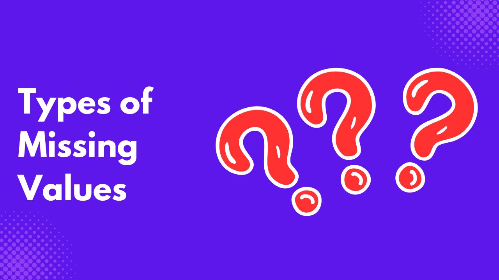

In the real world, it’s not always possible to have a complete dataset. For several reasons, cases might arrive where some observations will have missing values.
Understanding the source of these missing values determines how you handle them. This article will teach you about the three types of missing values, their characteristics, statistical implications, and handling methods.
Types of Missing Data
A missing value refers to the absence of data in a dataset. It occurs when no observation is recorded for a particular variable. Missing values can arise for reasons such as survey errors, system failures, respondents skipping survey questions, and so on. There are various types of missing values;
- Missing Completely at Random (MCAR)
- Missing at Random (MAR)
- Missing Not at Random (MNAR)
Missing Completely at Random (MCAR)
MCAR refers to a scenario where the missing observations in a dataset are independent of the observed and unobserved data. This implies that the missingness is purely random and does not depend on any systematic factor related to the dataset.
An example is a survey in which a respondent skips a question due to a software glitch or a lab experiment in which test results are missing due to random equipment failure.
MCAR can occur due to technical data collection issues, survey non-response unrelated to systematic reasons, or randomly lost or corrupted data without any pattern. MCAR does not introduce bias into a statistical analysis because it is a random occurrence.
Inferences still remain valid when data is MCAR, but the sample size is greatly reduced, which can lead to wider confidence intervals and lower power in hypothesis tests. Statistical tests like Little’s MCAR tests can help verify whether data is MCAR or not.
Since MCAR does not introduce bias, you can use several methods to handle the missing values:
- Listwise Deletion: Remove cases with missing values since the missing values are random.
- Pairwise Deletion: Use the available data in calculations without deleting any observation.
- Mean/Median/Mode Imputation: Replace missing values with the mean/median for numerical variables or mode for categorical variables.
- Multiple Imputation: Use statistical methods to estimate and replace missing values while accounting for uncertainty.
- Maximum Likelihood Estimation: A more advanced approach that estimates parameters directly using the likelihood function.
Missing at Random (MAR)
MAR is a situation in which the missing values are dependent on observed variables; that is, the probability of missingness depends on the observed data but not on the missing data itself.
For example, older patients might miss blood pressure readings more frequently. If age is recorded, the missingness depends on an observed variable (age) but not on the blood pressure values.
In MAR, the missing data is conditional on observed data, indicating it is random. This makes it easier for better statistical handling compared to Missing Not at Random (MNAR), which we will see in the next section.
MAR can result from respondents skipping sensitive questions or non-response patterns influenced by observed data by education, age, or location.
Because one can predict MAR values based on observed data, you can use the following statistical methods to handle them:
- Multiple Imputation: Predicts missing values based on observed data.
- Maximum Likelihood Estimation (MLE): Estimate parameters without imputing missing values, just like it is common in regression and Structural Equation Modelling (SEM)
- Weighting Methods: Adjusts for missing data by assigning weights to observed data; this is often used in survey analysis.
Missing Not at Random (MNAR)
MNAR occurs when the probability of missing data depends on unobserved data. This indicates that the missing data is systematically related and not random.
A typical example in a medical study is if patients with severe symptoms are more likely to drop out of a clinical trial and their severity is not recorded. This is a scenario of MNAR.
Conducting analysis on data with MNAR can lead to biased estimates since the missing values are not dependent on any of the observed values. MNAR also reduces the dataset’s representativeness since a significant portion is missing.
Unlike MCAR and MAR, which one can handle using traditional imputation methods, such as mean or regression-based imputation, MNAR needs an advanced approach such as:
- Modeling the Missing Data Mechanism: You can use external information to develop a model and estimate the missing values based on known relationships. This external information will convert the data from MNAR to MAR, where you can now use any of their respective handling methods to fill in the missing values.
- Sensitivity Analysis: Conducting sensitivity analysis helps assess the impact of different assumptions about missing data.
- Multiple Imputation with MNAR Models: Using imputation techniques that account for MNAR patterns, such as Heckman selection or pattern-mixture models.
- Using Domain Knowledge: Subject-matter expertise can guide adjustments and improve estimation techniques.
Differences between MCAR, MNAR, and MAR
| MCAR | MAR | MNAR |
|---|---|---|
| Missing values occur completely at random, unrelated to any data. | Missing values depend on observed data but not on the missing values themselves. | Missing values depend on the unobserved/missing data itself |
| No systematic pattern in missingness. | Systematic pattern based on observed variables. | Systematic pattern based on unobserved variables. |
| Least biased if missingness is handled properly. | Can be handled using statistical methods like multiple imputation. | Can lead to serious bias if not properly addressed. |
| Example: A machine randomly fails to record a value. | Example: Missing income data depends on age but not on income itself. | Example: People with higher incomes are less likely to report earnings. |
Identifying the Type of Missing Data
It’s important to know the type of missingness in a dataset to help you choose the right imputation technique. You can either use statistical tests or visualization to determine the nature of the missing data. In most cases, you can even combine the two methods to achieve better results.
Statistical Tests to Determine Missing Data Mechanism
- Littles’s MCAR Test: This chi-square test checks if missingness is dependent on both observed and unobserved values. If the test fails, the null hypothesis is rejected, signifying that the data is MCAR. Otherwise, the missingness is either MAR or MNAR.
- t-Tests or ANOVA for MAR vs MCAR: Comparing observed values between missing and non-missing groups can help determine if missingness depends on available data.
- Logistic Regression of Missingness Indicators: You can use a ****binary missingness indicator (1 = missing, 0 = observed) to regress on observed variables. If the missingness is significantly related to observed data, it suggests MAR. If no relationships are found, it suggests MCAR.
Visualizing Missing Data Patterns
- Missingness Matrix (Heatmap): You can use a statistical software to create a heatmap to display where values are missing in a dataset.
- Bar Charts of Missing Values: Plotting the missing values per variable to show which variables are most affected.
- Pairwise Missingness Scatterplots: Visualizing whether missing values in one variable correlate with missing values in another.
- Pattern Plots (Upset Plots or Venn Diagrams): These show combinations of missing values in different variables and can help detect dependencies.
Conclusion
Data cleaning is a time consuming task, especially when it comes to handling missing values. But it’s important one treats them with caution. You can’t just discard them, they might introduce bias to your data, leading to wrong insights.
In this article, you learnt about the three types of missing values you are likely to encounter in a dataset, examples, their statistical implications, and how to handle them. You have also learned how to identify missing values statistically and visually.
Resources
- 9 Python Libraries for Managing Missing Data Efficiently
- Handling Missing Data in R
- 10 AI Data Analysis Tools That Will Redefine How You Make Decisions
Need Help with Data? Let’s Make It Simple.
At LearnData.xyz, we’re here to help you solve tough data challenges and make sense of your numbers. Whether you need custom data science solutions or hands-on training to upskill your team, we’ve got your back.
📧 Shoot us an email at admin@learndata.xyz—let’s chat about how we can help you make smarter decisions with your data.